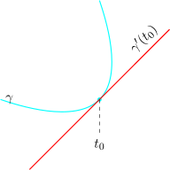

5.9 Paths and Smooth Paths
A path in a region \(G\subset \mathbb {C}\) is a continuous function \(\hspace {0.2cm} \gamma : [a,b] \longrightarrow G\hspace {0.2cm}\) for some interval \([a,b]\) in \(\mathbb {R}\).
If \(\gamma '(t)\) exists for each \(t\in [a,b]\) and \(\gamma '(t): [a,b]\longrightarrow \mathbb {C}\) is continuous, we say that \(\gamma \) is a smooth path.
Also \(\gamma \) is said to be piece wise smooth if there is a partition of \([a,b]\), say
\(\hspace {0.2cm} a = t_0 < t_1< \cdots \cdots \cdots < t_n = b\) such that \(\gamma \) is smooth one each sub interval of \([t_{i-1},ti]\).
Suppose that \(\hspace {0.2cm} \gamma : [a,b] \longrightarrow G\hspace {0.2cm}\) is a differentiable path(smooth) and that for some
\(t_0 \in (a,b),\hspace {0.2cm} \gamma '(t_0) \neq 0\).
Then \(\gamma \) has a tangent at the point \(\gamma (t_0)\). The slope of the tangent line is \(\tan (arg\gamma '(t_0))\).

If \(\gamma _1\) and \(\gamma _2\) are two paths with \(\gamma _1(t_1) = \gamma _2 (t_2) = z_0\hspace {0.2cm}\) (say) and \(\hspace {0.2cm} \gamma '_1 (t_1) \neq 0 \neq \gamma '_2(t_2),\hspace {0.2cm}\) then we define the angle between \(\gamma _1\) and \(\gamma _2\) at \(z_0\) to
be
\[\boxed {arg\gamma '_2(t_2) - arg\gamma '_1(t_1)}\]
Suppose \(\gamma \) is a path in \(G\) and \(f: G \longmapsto \mathbb {C}\) is analytic. Then
\[\boxed { \rho = fo\gamma \hspace {0.2cm} \text {is also a path and} \hspace {0.2cm} \rho '(t) = f'(\gamma (t))\cdot \gamma '(t)\hspace {0.2cm}\text { by chain rule}}\]
Let \(\hspace {0.2cm} z_0 = \gamma (t_0)\hspace {0.2cm}\) and suppose \(\hspace {0.2cm} \gamma '(t_0) \neq 0\hspace {0.2cm}\) and \(\hspace {0.2cm} f'(z_0) \neq 0,\hspace {0.2cm} \rho '(t_0) \neq 0\).
\[\boxed {arg \rho '(t_0) = argf'(z_0) + arg \gamma '(t_0)}\]
This gives \[arg \rho '(t_0) - arg \gamma '(t_0) = arg f'(z_0)\hspace {0.5cm}\cdots \cdots \cdots \cdots \hspace {0.4cm} (1)\]
Now let \(\gamma _1\) and \(\gamma _2\) be paths with \(\hspace {0.2cm} \gamma _1 (t_1) = \gamma _2(t_2) = z_0\hspace {0.2cm}\) and \(\hspace {0.2cm} \gamma '_1(t_1) \neq 0 \neq \gamma '_2(t_2)\).
Let \(\hspace {0.2cm} \rho _1 = fo\gamma _1\hspace {0.2cm}\) and \(\hspace {0.2cm} \rho _2 = fo\gamma _2\).
Suppose also that the paths \(\gamma _1\) and \(\gamma _2\) are not tangents to each other at \(z_0\). i.e \(\hspace {0.2cm} \gamma '(t_1) \neq \gamma '(t_2)\).
From equation \((1)\) we get \[arg \gamma '_2(t_2) - arg\gamma '_1(t_1) = arg \rho '_2(t_2) - arg \rho '_1(t_1)\]
Thus given any two paths through \(z_0\hspace {0.2cm}f\) maps these paths onto two paths through \(\hspace {0.2cm} w_0 = f(z_0)\hspace {0.2cm}\) and when \(\hspace {0.2cm} f'(z_0) \neq 0,\hspace {0.2cm}\) the
angles between the curves are preserved both in magnitude and direction. We have thus
proved.
Theorem
Let \(\hspace {0.2cm} f: G \longmapsto \mathbb {C}\hspace {0.2cm}\) be analytic. Then \(f\) preserves angles at each point \(z_0\) of \(G\) when \(\hspace {0.2cm} f'(z_0) \neq 0.\hspace {0.2cm}\) In other words \(f\) is a conformal
mapping.
Definition
Let \(\hspace {0.2cm} f: G \longmapsto \mathbb {C}\) be such that which preserves angles and \(\hspace {0.2cm} \lim \limits _{z \rightarrow z_0} \dfrac {\left |f(z) - f(z_0)\right | }{\left |z - z_0\right | }\hspace {0.2cm}\) exists, then \(f\) is called a conformal mapping if \(f\) is analytic
and \(\hspace {0.2cm} f'(z) \neq 0\hspace {0.2cm}\) for any \(z\), then \(f\) is conformal.
The converse is also true.
Example
The mapping \(\hspace {0.2cm} w = f(z) = e^z\hspace {0.2cm}\) is conformal throughout \(\mathbb {C}\).
\(f(z)\) is analytic and \(\hspace {0.2cm} f'(z) \neq 0\hspace {0.2cm}\) for all \(z\). But \(\hspace {0.2cm} z = c + iy\hspace {0.2cm}\) where \(c\) is fixed then \(\hspace {0.2cm} f(z) = re^{iy}\hspace {0.2cm}\) where \(r = e^c\).
This shows that the map \(\hspace {0.2cm} w = e^z\hspace {0.2cm}\) sends the straight line \(\hspace {0.2cm} x = c\hspace {0.2cm}\) onto a circle with centre origin and radius
\(e^c\).
Also, \(f\) maps the line \(\hspace {0.2cm} y = d\hspace {0.2cm}\) onto the infinite ray \(\hspace {0.3cm}\{re^{id}:\hspace {0.2cm} 0 < r< \infty \}\)
\[y = d\iff z = x + id\]
Example
Verify by talking the curve \(\hspace {0.2cm} y = x - 1\)
\[\text {i.e}\hspace {0.2cm} z(x) = x + i(x -1)\hspace {0.2cm}, \hspace {0.2cm} -\infty < x < \infty \]
the angle of rotation under the transformation \(\hspace {0.2cm} w = z^2\hspace {0.2cm}\) at the point \(\hspace {0.2cm} 2 +i\).
Solution
By definition the angle of rotation for \(\hspace {0.2cm} f(z) = z^2\hspace {0.2cm}\) at \(\hspace {0.2cm} 2 + i\hspace {0.2cm}\) given by \begin {align*} \operatorname {arg}( f'(2+i)) & = \operatorname {arg} (4 + 2i)\\ & = \tan ^{-1}\Big (\dfrac {1}{2}\Big ) + 2n\pi \end {align*}
The line \(\hspace {0.2cm} y = x - 1\hspace {0.2cm}\) makes an angle \(\hspace {0.2cm} \theta = \dfrac {\pi }{4}\hspace {0.2cm}\) with the \(x-\)axis.
The image of \(\hspace {0.2cm} y = x - 1\hspace {0.2cm}\) under the map \(\hspace {0.2cm} w = z^2\hspace {0.2cm}\) is given by using the relations.
\[ u = x^2 - y^2 \hspace {0.3cm} \text {and}\hspace {0.4cm} v = 2xy\]
as \(\hspace {0.2cm} v = \dfrac {u^2 - 1}{2}.\hspace {0.2cm}\) The image of \(\hspace {0.2cm} 2 + i\hspace {0.2cm}\) is \(\hspace {0.2cm} 3 + 4i\hspace {0.2cm}\) in the \(w-\)plane.
Now, for the image curve \(\hspace {0.2cm} v = \dfrac {u^2 - 1}{2}\) \[ w = u +iv = u + i\Big (\dfrac {u^2 - 1}{2}\Big )\] \begin {align*} \phi & = arg \Bigg (w'\Bigg |_{w = 3 + 4i}\Bigg )\\\\ & = \operatorname {arg}( 1 +i4)\\ & = \operatorname {arg}( 1 + 3i)\\ & = \tan ^{-1}(3) \end {align*}
Thus the angle of rotation in \(w-\)plane is \begin {align*} \phi - \theta & = \tan ^{-1}(3) - \dfrac {\pi }{4}\\ & = \tan ^{-1}(3) - \tan ^{-1}(1)\\ & = \tan ^{-1}\Big (\dfrac {3 - 1}{1 + 3}\Big )\\ & = \tan ^{-1}\Big (\dfrac {1}{2}\Big )\\\\ \end {align*}
Questions on this section
Stuck on something here? Ask below and it stays attached to this topic.